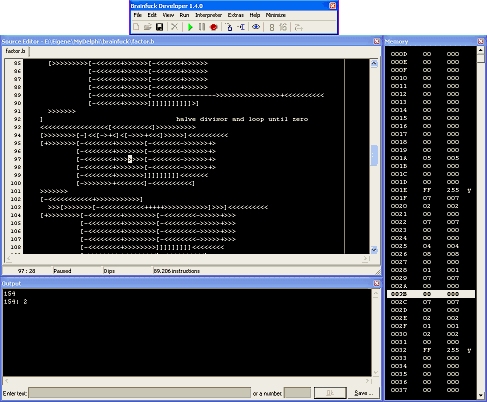

Home
Brainfuck Developer
What is it?

Brainfuck Developer is a Win32 tool (soon also for Linux, see the
announcement) for writing,
debugging, and (in
some degree) understanding Brainfuck programs. Its main feature is
an integrated debugger with support for
single-step trace, run-to-cursor, and interactive memory inspection. It is
a development tool, not only a simple interpreter.
With the "Watch Program Operation" feature, you can watch your BF
code
running to go get an impression what your program does. In addition,
BFdev features "piping" input and output data to files. You can set an
input file from which the input data is read, and an output file to
which all output data is written (in binary).
Given this ability, BFdev is just as powerful as console interpreters.
Since version 1.4.0, BFdev supports the pbrain (procedural
brainfuck) language extension. This extension adds three new commands to
the BF language (as explained below). A very useful feature
integrated in BFdev since version 1.4.6 is the Text Generator, a tool
that generates BF code for printing text.
There is nothing to say about how BFdev works. Everyone who has
already worked with an IDE like Visual Studio, Delphi, or Turbo
Pascal knows the basic functioning of BFdev. (To those who have
not: do you really wanna code Brainfuck? ;) All of the program's
functions are self-explanatory.
The screenshot to the right shows BFdev in debug mode, running "factor.b"
by Brian Raiter.
Technical details
For Brainfuck programs, the interpreter provides the following
"virtual machine":
- Memory size: 32768 cells à 8 bit or 16 bit (selectable)
- If the pointer leaves the legal memory bounds (underflow or
overflow), wrap-around occurs.
- Procedural BF (pbrain) is supported. Stack size is 65536.
- BF interpreters often have a "bracket nesting limit". BFdev does not. It
supports an infinite number of nested brackets (only limited by your
available RAM).
- The interpreter ignores all characters in the code that are not
Brainfuck commands.
- Complete lines can be commented out by using
one of the following comment markers. They MUST be the first
non-whitespace character of the line. Comment markers may be disabled.
Comment markers are: ; / * ' % #
- BFdev utilizes buffered output for printing. This
increases performance since the slow API calls don't have to be made each time a
single character is printed. Buffering may cause the output appear choppy,
especially on slow computers. If a BF program is very slow, it may appear
hanging, but that's generally not the case. The characters it prints are
just not immediately shown on screen! You can change the buffer size or disable
it by choosing "Set Output Buffer Size" in the "Extras" menu. Additionally, you
could press F8 to pause the program and to flush the output buffer.
- Programs can indicate a new line by printing the characters LF (#10),
CRLF (#13#10), CR (#13), or LFCR (#10#13).
- Under Windows XP, BFdev runs optimal. Under Windows 95/98, BFdev cannot
produce output greater than 64 KB. This is due to limitations of the operating
system.
Download
Brainfuck Developer is freeware. That means, you may distribute it
freely, but only in "complete and unchanged state" and NOT ON YOUR OWN WEBSITE.
BFdev is "complete" with
the three files bfdev.exe, printer.b, and readme.txt, bundled in the original
bfdev.zip file. FREEWARE DOES NOT MEAN PUBLIC DOMAIN OR OPEN SOURCE. I hold
all rights.
To webmasters: DO NOT link to the zip-files directly and
DO NOT upload the files to your webserver! Instead, link to 4mhz.de or
4mhz.de/bfdev.html. Thanks.
Feedback is always appreciated, especially if you
encounter any bugs or have any ideas for the next version.
Important for programmers: If you write a program like
,>, and enter a text like "a", please don't be confused if BFdev
only asks for just one input instead of two! This is NO BUG, it's a feature.
In text input mode, BFdev may append a new-line code to your input, so that the
second , reads this new-line code. You can change this behaviour
in the "Interpreter" menu. (Well... given this explanation, I hope no one
will complain anymore...)
- bfdev-1-4-7.zip
(Win32 binary, 419 KB, MD5: 93ed1dfc4918c7ced7457e4a5297d972)
- bfdev-1-4-7.rar
(Win32 binary, 331 KB, MD5: b5e67e66b74c98e60bfa3befdf863c68)
Some hints for using BFdev
- If you want to print large amounts of text, use the Text Generator tool
integrated in BFdev (in the "Extras" menu).
- Some programs run faster in 8-bit mode; others gain better precision in
16-bit mode. You have to check which mode performs better.
- Use Ctrl+F5 and Ctrl+F6 or Ctrl+Tab and Ctrl+Shift+Tab to switch between
open documents.
- Some authors write their BF programs in such a way that they expect
a CRLF line break rather than the standard LF when requesting input from the user.
By default, BFdev sends an LF. If the BF program you're running doesn't behave
as expected, try switching BFdev to "Report CRLF for line breaks when entering
text" in the "Extras" menu.
- Infrequently, BF programs loaded from the internet don't work correctly.
This is because some authors use comment markers for design purposes
so that some code lines are not executed by BFdev. In this case, you can
disable comment markers by unchecking the "Enable comment markers" entry in
the "Extras" menu.
- If you input text lines with standard configuration, a line break is appended
to every line of text you type. You can enter single characters by switching
line breaks off in the "Extras" menu ("Report no Line Break")
The pbrain language extension
pbrain means
"procedural brainfuck" and enables you to define and call procedures
in your BF programs. For this purpose, pbrain adds three new commands to the BF
language: "(", ")", and ":".
- "(" starts definition of a procedure. This newly created procedure will be
referenced with the value that's in the current memory cell.
- ")" ends the definition.
- ":" calls that procedure that is referenced by the current memory cell.
BFdev does not tolerate calling of undefined procedures. In this case, it
will report an error. BFdev offers a stack of 65536 entries, that means you can nest
procedures until a depth of 65536. There is no stack overflow checking.
You can enable or disable pbrain support by checking or unchecking "Enable
Procedural BF" in the "Interpreter" menu, by pressing Ctrl+P, or by clicking
the pbrain button in the tool bar.
Version history
Brainfuck links
last modified: 16 May 2008